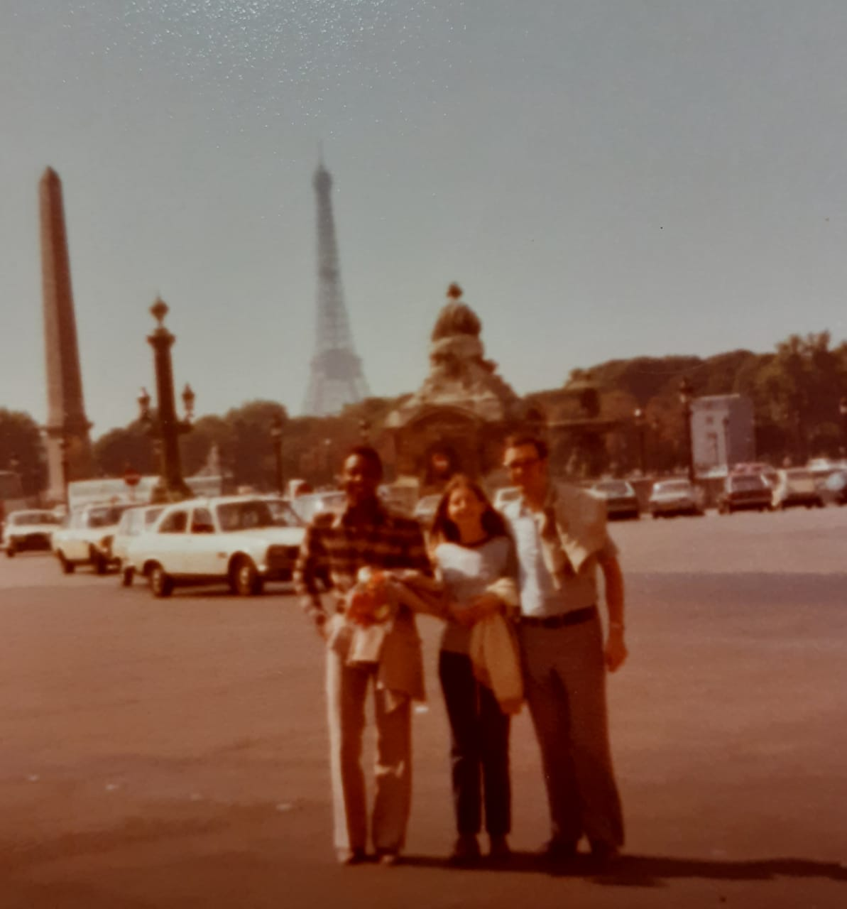

mi abuelo fue y es ¡todo un viajero!. En Argentina recorrió gran parte de Córdoba, San Luis, Misiones, Tierra Del Fuego y Rio Negro. Luego en Latinoamérica recorrió: Colombia, Bolivia, Paraguay y Brasil. En Europa visito: Francia, Italia, Inglaterra, Holanda, Bélgica, Luxemburgo, Turquía, Grecia, Suiza, España, Alemania, Austria y Rep. Checa. Por ultimo de Norteamérica Estados Unidos y Asia la India. Algunos de estos viajes fueron por trabajo como el de india y otros por simple turismo.
veamos algunas fotos...
